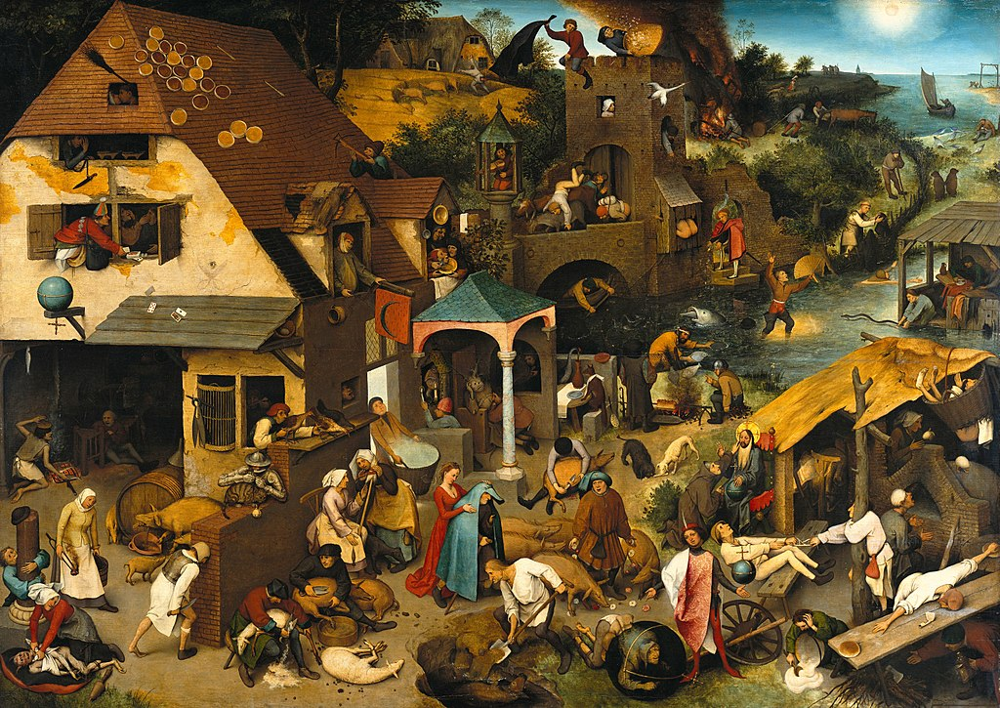

Folklore is the expressive body of culture shared by a particular group of people; it encompasses the traditions common to that culture, subculture or group. This includes oral traditions such as tales, proverbs and jokes. They include material culture, ranging from traditional building styles to handmade toys common to the group. Folklore also includes customary lore, taking actions for folk beliefs, the forms and rituals of celebrations such as Christmas and weddings, folk dances and initiation rites. Each one of these, either singly or in combination, is considered a folklore artifact. Just as essential as the form, folklore also encompasses the transmission of these artifacts from one region to another or from one generation to the next. Folklore is not something one can typically gain in a formal school curriculum or study in the fine arts. Instead, these traditions are passed along informally from one individual to another either through verbal instruction or demonstration. The academic study of folklore is called folklore studies or folkloristics, and it can be explored at undergraduate, graduate and Ph.D. levels.